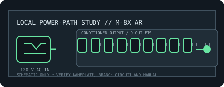

[ RACKMOUNT LINE CONDITIONER // EXACT MODEL ]
Furman M-8x AR
Rackmount True RMS automatic voltage regulator with nine regulated outputs for 120 V equipment. No battery backup; observe the input-dependent output-current rating.

ARCHIVAL IDENTIFICATION: Preserve exact model and regional suffix, nameplate, serial/date code, outlet map, manual revision and observed condition. Similar product-family names do not prove electrical equivalence.
Model specifications
| Manufacturer / exact model SKU | Furman M-8x AR. Verify full regional suffix and revision from the physical nameplate. |
|---|---|
| Catalog category / topology | Line conditioners — rackmount AC conditioner; automatic voltage regulator. No battery or stored-energy backup. |
| Input voltage / supported range | 120 V AC nominal North American line; manufacturer-stated AVR capture range 97–141 V AC. |
| Output voltage / range | Regulated 120 V AC ±5 V within the capture range. |
| Capacity / current | 15 A input; 12–15 A output capacity depending on input voltage (not a 15 A guarantee at every input). |
| Regulation / conditioning functions | Toroidal-autotransformer True RMS regulation; EVS instantaneous over-voltage shutdown and delayed under-voltage shutdown, ECS over-current shutdown, and standard Furman conditioning. |
| Outlets / connectors | Nine regulated/conditioned AC outlets: eight rear and one front. |
| Response / continuity | Voltage correction is active within the stated capture range; no AVR correction-time figure is stated in the cited summary. Datasheet specifies 1 ns surge response. No battery or transfer ride-through. |
| Compatibility | 120 V North American equipment only; total load and each device must remain inside the reduced output/current rating. Not an isolation transformer or UPS. |
| Electrical safety / installation limits | Grounded 15 A source, sound protective earth, ventilation and correctly rated branch circuit required. Do not exceed input/output-current limits; EVS/ECS shutdown does not make unsafe wiring safe. Verify nameplate and manual. |
Service and archival notes
- Record the AC source, loaded current, connected equipment, observed voltage and test conditions separately from manufacturer-rated values.
- This is a conditioning/distribution appliance, not a UPS: it cannot maintain output through a mains interruption.
- Never open energized mains equipment. Quarantine units with damaged cords, overheated connectors, compromised enclosure or grounding, or evidence of liquid ingress.
- Use the exact regional manual/nameplate for connector, branch-circuit, mounting, grounding and load requirements; this static record is not an installation approval.
Manufacturer sources and manual
- Furman manufacturer product page — M-8x ARProduct-family overview and manufacturer-stated functions. Confirm the complete model label and regional variant.
- Furman official operating manual — M-8x ARManufacturer instructions for ratings, connections, operation and electrical safety.
- Furman official datasheet — M-8x ARManufacturer model specifications; ratings and feature details are revision-sensitive.